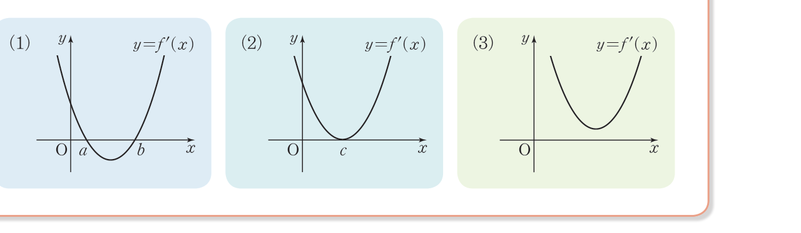

2026학년도 2학기 | 미적분 I
시간대별 주택용 전력 소비 그래프를 떠올려 보자. 새벽에는 낮고, 점심·저녁에는 봉우리를 이루고, 그 사이에는 잠깐 골짜기가 생긴다. 이 "봉우리"와 "골짜기"가 바로 함수의 극대와 극소이다.
[개방형 발문] 차시 14에서 만든 함수 \(f(x) = x^3 - 3x^2 + 1\)의 증감표를 다시 살펴보자. \(f\)는 \(x = 0\)에서 증가 \(\to\) 감소로 바뀌고, \(x = 2\)에서 감소 \(\to\) 증가로 바뀐다. 이때 두 점 중 어느 쪽이 "봉우리"이고 어느 쪽이 "골짜기"인지, 그리고 도함수 \(f'(x)\)의 부호 변화와 어떻게 연결되는지 추측해 보자.
[연결] 차시 14의 증감표는 도함수 부호 \(+\to-\to+\)의 전환점 \(x = 0,\ 2\)를 정확히 짚었다. 본 차시는 그 전환점에서 함수가 봉우리(극대)인지 골짜기(극소)인지를 판정하는 도구를 배운다. 핵심 함정 — \(f'(a) = 0\)이라고 해서 \(a\)에서 반드시 극값을 갖는 것은 아니다 (예: \(f(x) = x^3\)에서 \(x = 0\)). 차시 14 Level 3에서 만난 이 함정이 본 차시의 출발점이다. (비상 미적분 I P.82 · 극대와 극소 개념 탐구 참고)
함수 \(f(x)\)에서 \(x = a\)를 포함하는 어떤 열린구간에 속하는 모든 \(x\)에 대하여
극댓값과 극솟값을 통틀어 극값(extreme value)이라 한다.
핵심: "극"은 지역적(local) 개념이다. 정의역 전체의 최댓값/최솟값이 아니라, "\(x = a\) 주변의 어떤 작은 열린구간 안에서 가장 크다/작다"는 뜻. 그래서 한 함수에 극값이 여러 개 있을 수 있고, 극댓값이 극솟값보다 작을 수도 있다. (비상 미적분 I P.82 · 극대와 극소의 정의 + 문제 06 「극댓값이 극솟값보다 항상 큰가?」 참고)
함수 \(f(x)\)가 \(x = a\)에서 극값을 갖고 \(x = a\)를 포함하는 어떤 열린구간에서 미분가능할 때:
미분가능한 함수 \(f(x)\)가 \(x = a\)에서 극값을 가지면 \(f'(a) = \) \(0\).
정당화 (극댓값 사례): \(x = a\)에서 극댓값이면 \(h\)의 절댓값이 충분히 작을 때 \(f(a + h) - f(a) \leq 0\). 따라서
좌극한 \(\displaystyle\lim_{h\to 0^-}\dfrac{f(a+h) - f(a)}{h} \geq 0\), 우극한 \(\displaystyle\lim_{h\to 0^+}\dfrac{f(a+h) - f(a)}{h} \leq 0\). 미분가능 \(\Rightarrow\) 두 극한이 같으므로 \(f'(a) = 0\). (비상 미적분 I P.83 · 극값과 미분계수 참고)
⚠ 역은 일반적으로 거짓!
\(f'(a) = 0\)이라고 해서 \(f\)가 \(x = a\)에서 반드시 극값을 갖는 것은 아니다. 예: \(f(x) = x^3\)은 \(f'(0) = 0\)이지만 \(x = 0\)에서 증가만 — 극값 없음. 또, 극값을 갖더라도 미분가능하지 않을 수 있다. 예: \(f(x) = |x|\)는 \(x = 0\)에서 극솟값을 갖지만 미분가능 X.
미분가능한 함수 \(f(x)\)에 대하여 \(f'(a) = 0\)일 때:
핵심: "\(f'(a) = 0\)"이라는 필요조건만으로는 부족하다. 반드시 \(f'\)의 부호 변화 패턴까지 봐야 극값 여부와 그 종류(극대/극소)가 결정된다. 차시 14에서 익힌 증감표가 본 차시의 핵심 무기. (비상 미적분 I P.84 · 함수의 극대와 극소의 판정 참고)
3단계 루틴: ① \(f'(x)\) 구하기 ② \(f'(x) = 0\) 해 ③ 증감표로 부호 변화 분석.
\(f'(x) = 3x^2 - 3 = 3(x + 1)(x - 1)\). \(f'(x) = 0 \Rightarrow x = -1\) 또는 \(x = 1\).
| \(x\) | \(\cdots\) | \(-1\) | \(\cdots\) | \(1\) | \(\cdots\) |
|---|---|---|---|---|---|
| \(f'(x)\) | \(+\) | \(0\) | \(-\) | \(0\) | \(+\) |
| \(f(x)\) | ↗ | \(7\) | ↘ | \(3\) | ↗ |
\(x = -1\) 좌우 \(+ \to -\) \(\Rightarrow\) 극댓값 \(f(-1) = \) \(7\). \(x = 1\) 좌우 \(- \to +\) \(\Rightarrow\) 극솟값 \(f(1) = \) \(3\).
주목: 극댓값 \(7\)이 극솟값 \(3\)보다 크다 — 본 예제에서는 우리의 직관과 같지만, 일반적으로는 그렇지 않다 (예: \(y = x + \dfrac{1}{x}\)에서 극댓값 \(-2\), 극솟값 \(2\)). (비상 미적분 I P.84 · 예제 3 참고)
함수 \(f(x) = x^3 + ax^2 + bx + 4\)가 \(x = 1\)에서 극댓값 \(8\)을 가질 때 \(a, b\)와 극솟값을 구하라.
STEP 1 (필요조건): \(f'(x) = 3x^2 + 2ax + b\), \(f'(1) = 0 \Rightarrow 3 + 2a + b = 0\) … ①
STEP 2 (함숫값): \(f(1) = 1 + a + b + 4 = 8 \Rightarrow a + b = 3\) … ②
STEP 3 (연립): ①, ② \(\Rightarrow a = -6,\ b = 9\).
STEP 4 (확인): \(f'(x) = 3x^2 - 12x + 9 = 3(x-1)(x-3)\). \(x = 1\) 좌우 \(+ \to -\) (극대 ✓), \(x = 3\) 좌우 \(- \to +\) (극소).
STEP 5 (극솟값): \(f(3) = 27 - 54 + 27 + 4 = \) \(4\).
⚠ 함정: STEP 1, 2만 풀고 끝내면 안 된다. STEP 4에서 부호 변화를 확인해야 한다. 만약 \(x = 1\)이 실제 극댓값이 아니면 (예: 변곡점) 답을 다시 풀어야 한다. (비상 미적분 I P.85 · 예제 4 참고)
증감표 작성 → 극값 직접 구하기
"극값 갖는다 / 갖지 않는다" 조건 — 도함수 판별식

"틀려야 는다!" \(f'(a) = 0\) \(\Rightarrow\) 극값? — 필요조건의 함정
📢 학생 A: "미분가능한 함수 \(f(x)\)에 대해 \(f'(a) = 0\)이면 \(f\)는 \(x = a\)에서 반드시 극값을 가져!"
📢 학생 B: "함수 \(f(x)\)가 \(x = a\)에서 극값을 가지면 \(f\)는 \(x = a\)에서 반드시 미분가능해!"
두 주장 모두 거짓이다. "필요조건"과 "충분조건"의 구별을 강조하는 차시 15의 핵심 함정.
STEP 1 — 학생 A 반례: \(f(x) = x^3\)을 보자. \(f'(x) = 3x^2 \Rightarrow f'(0) = 0\). 그러나 \(x = 0\) 주변에서 \(f'(x) \geq 0\)이므로 부호 변화 없음 \(\Rightarrow\) \(f\)는 \(x = 0\)에서 극값을 갖지 않는다 (오히려 실수 전체에서 증가). 따라서 학생 A의 주장은 거짓.
STEP 2 — 학생 B 반례: \(f(x) = |x|\)를 보자. \(f\)는 \(x = 0\) 주변에서 \(f(x) \geq f(0) = 0\)이므로 \(x = 0\)에서 극솟값 \(0\)을 갖는다. 그러나 \(f\)는 \(x = 0\)에서 좌미분계수 \(-1\)과 우미분계수 \(+1\)이 다르므로 미분가능하지 않다. 따라서 학생 B의 주장도 거짓.
STEP 3 — 정확한 명제:
① 미분가능한 함수가 극값을 가지면 \(f'(a) = 0\) (참) — 필요조건(페르마 정리).
② \(f'(a) = 0 \Rightarrow\) 극값 (거짓) — 부호 변화 필요.
③ 극값을 가지면 미분가능 (거짓) — \(|x|\) 반례.
④ \(f'(a) = 0\) AND \(f'\)이 \(a\)에서 부호 변화 \(\Leftrightarrow\) 극값 (참) — 미분가능한 함수의 극값 판정 정리.
핵심 통찰: "필요조건이지만 충분조건이 아닌" 관계를 명확히 구분해야 한다. \(f'(a) = 0\)은 (미분가능한 함수에서) 극값의 필요조건이지만 충분조건이 아니다. 충분조건이 되려면 "부호 변화"가 추가되어야 한다. 이 함정은 차시 16(함수의 그래프 개형)에서 변곡점 개념으로 다시 정리된다 — \(f'(a) = 0\)이지만 극값 아닌 점이 바로 변곡점의 일부.
📖 출처: 수능특강 수학Ⅱ · 도함수의 활용 1 · 유제 6 [26009-0080]
난이도 ★★★ (학습지 max+2, 7분) · 핵심: 곱함수 \(g(x) = (x^2 - x)f(x)\)의 극값 조건 \(g'(3) = 0\), \(g(3) = 12\)에서 일차함수 \(f(x)\)를 결정 → 값 \(g(-3)\) 대입
(가) 함수 \(f(x)\)는 일차함수이다.
(나) 함수 \(g(x)\)는 \(x = 3\)에서 극값 \(12\)를 갖는다.
핵심: 극값 조건은 "\(g'(a) = 0\) AND \(g(a) = (\text{극값})\)"의 두 가지 정보를 동시에 준다. 한쪽으로 \(f'(3)\) 결정, 다른 쪽으로 \(f(3)\) 결정 \(\Rightarrow\) 일차함수 \(f\)의 두 계수를 정확히 묶는다. "극값을 갖는다"는 조건의 이중 활용이 본 문제의 미덕.
📖 출처: 2014학년도 4월 학력평가 수학영역 가형 7번 [3점]
난이도 ★★★ (학습지 max+2, 7분) · 핵심: "삼차함수가 극값을 갖는다" \(\Leftrightarrow\) "도함수가 서로 다른 두 실근(부호 변화 2회)" \(\Leftrightarrow\) "이차식 도함수의 판별식 \(\gt 0\)" — 매개변수 \(a\)에 대한 이차부등식 풀이 후 정수 개수
핵심: 본 차시 Level 2 문제 4·5의 정확한 평가원 출제 패턴. "극값 갖는다" \(\Leftrightarrow D \gt 0\) (등호 제외), "극값 갖지 않는다" \(\Leftrightarrow D \leq 0\) (등호 포함) — 두 조건의 부등호와 등호 처리가 핵심. 본 문제는 학력평가 3점이지만 학생들이 \(D \geq 0\)로 풀어 \(a = 0, 6\)을 포함시키는 함정에 자주 빠진다. 차시 14(증감) \(\to\) 차시 15(극값) \(\to\) 차시 16(그래프 개형)으로 이어지는 핵심 사고 패턴.
스마트폰으로 우측 QR코드를 스캔하여, 아래 3가지 유형 중 하나 이상을 체크하고 통합 서술형으로 작성해 제출한다.